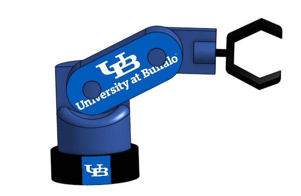

Medium
CAD / Design
Designing a University at Buffalo Inspired Robotic Arm
This article describes about designing a CAD-based robotic arm concept that combines mechanical design, creativity, and University at Buffalo inspired branding in a visually distinct model.